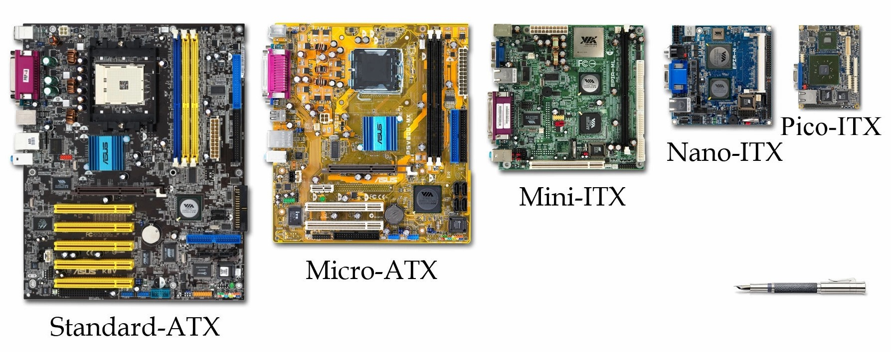

A aritmética de números nas bases 2, 8 e 16 funciona da mesma maneira que na base 10, obedecendo as opções de números.
Veja dois exemplos em binário:
1011
+101
10000
Só lembrando que 1 + 1 é igual a 10, e 10 + 1 é igual a 11.
Pra subtrair a mesma regra:
1010
-111
11
Nesse caso, precisamos lembrar que 10 - 1 é igual à 1, e 11 - 1 é igual à 10. A regra de "emprestar" números quando foi subtrair 0 de 1 permanece.
No caso de octais a mesma coisa, por exemplo:
176
+43
241
Só precisamos lembrar que na soma, caso dê 8, converta para 10, 9 pra 11, 10 pra 12 e assim por diante.
Na subtração, a mesma coisa:
542
-35
505
Nesse caso, podemos converter os octais para decimal (no caso 12 vira 10) e fazer a subtração, e converter o resultado para octal. As regras de "emprestar" permanecem.
No caso de hexadecimal também, por exemplo:
4E3
+A5
778
Só precisamos lembrar que na soma, caso dê 10, converta para A, 11 para B, 12 para C e assim por diante.
Na subtração, a mesma coisa:
A13
-5E
9B5
Nesse caso, podemos converter os hexadecimais para decimal (no caso E vira 14) e fazer a subtração, e converter o resultado para hexadecimal. As regras de "emprestar" permanecem.
PS: Tanto na base octal quanto na hexadecimal, é interessante converter os algarismos das unidades, dezenas e etc., para decimal, fazer a conta e reconverter para a base especificada.
Vamos supor alguns programas de desenvolvimento de programação (pode ser o XAMPP, que transforma a máquina num servidor PHP/MySQL, o Netbeans, IDE usada pra Java e outras linguagens e o Pycharm, usada pra Python).
Veja as recomendações mínimas para o Netbeans, por exemplo:
Microsoft Windows Vista SP1/Windows 7 Professional:
Processador: Intel Pentium III 800MHz ou equivalente.
Memória: 512 MB.
Espaço em disco: 750 MB de espaço livre em disco.
Ubuntu 9.10:
Processador: Intel Pentium III 800MHz ou equivalente.
Memória: 512 MB.
Espaço em disco: 650 MB de espaço livre em disco.
Macintosh OS X 10.7 Intel:
Processador: Intel Dual-Core.
Memória: 2 GB.
Espaço em disco: 650 MB de espaço livre em disco.
No geral, das ferramentas de desenvolvemos, a mais pesada provavelmente seria o Android Studio, por ser em Java e ter muitos aplicativos. Precisará de 4 GB no mínimo (de preferência 8), e também bastante espaço em disco.
Faremos um computador que terá as configurações melhores possíveis, com dual-boot de Windows e Linux. As para games exigem configurações mais pesadas que para desenvolvedores.
Muitas vezes, montar uma máquina tem custo-benefício melhor. Entre em alguns sites de vendo para pesquisar.
Outro problema, é que ao comprar um produto pronto, é que não podemos adicionar novos componentes como RAM, pois causa perda de garantia.
Até o momento, as configurações mais próximas para o computador seriam as que suportassem o Android Studio (a IDE pra programar que exige mais recursos).
No caso, o processador seria a da sexta geração, (Pentium G4560), outra opção seria o Intel Core i3.
Nesse site temos algumas dicas para escolher os processadores: https://www.techtudo.com.br/noticias/2017/10/o-que-muda-entre-computadores-core-i3-i5-i7-e-i9-voce-sabe-a-diferenca-entre-os-processadores.ghtml
A placa-mãe não precisa ser a melhor, pode ser uma mais razoável, mas não pegue uma muito ruim.
Primeiro, costumamos escolhendo o processador, para depois escolhermos a placa-mãe, e outros componentes.
No caso do HD, temos hoje a opção SSD, que não funciona com um "disquinho" girando, tipo um pen-drive gigante (hoje existem inclusive externos). O HD é a coisa mais lenta atualmente, por funcionar de forma parecida com uma vitrola, mas ele tem mais espaço que SSD. SSD é mais rápido para iniciar, por exemplo. Pegue uma com uma capacidade miníma necessária ou mais.
Teclado e mouse não tem muita distinção, mas o mouse é bom ser com mais botões.
Os gabinetes costumam vir com uma fonte genérica, que não são muito boas, então é melhor arranjar uma melhor, até pelas diferenças de voltagem de alguns componentes. Uma de 400 W atende bem o requisito. Hoje também temos os coolers de refrigeração líquida.
Monitor não temos muita distinção também, mas bom não pegar um com frequência muito baixa.
O sistema operacional também merece atenção, já que o Windows original costuma ter várias versões, que também tem configurações recomendadas pro aparelho. O Linux, apesar de gratuito, também exige configurações específicas.
O gabinete tem que ter uma certa resistência também, nada de algo muito barato.
A CPU é responsável pelo processamento de informações do computador, dentro do processador está o cache, registradores e outros tipos de memórias. É como o "cérebro" do computador, já que é responsável por trabalhar os dados enviados por e para outros componentes e os direcionar da melhor maneira, comandando tudo.
Usaremos de referência o processador Pentium G4560, que tem 3.5Ghz, é dual-core, com 64 bits, de 6ª geração e custa em média uns 350 Reais.
Para escolhermos bem um processador, veja a quantidade de GHz (quanto maior, melhor), a quantidade de núcleos (que dividem as tarefas) e os bits (32 ou 64) também são importantes, dependendo do sistema escolhido (processadores de 32 bits só acessam até 4 GB de RAM, processadores de 64 bits processam muito mais memória, mas só quando usados também com sistemas de 64 bits). A geração também influí, mas menos que essas outras opções.
Na verdade, o processador é o CPU, e não o gabinete, como a maioria pensa.
Dentro da caixinha, além do processador, tem o dissipador de calor (a ventoinha interna do computador).
Nos números dos processadores Intel, o número que vai do i3 ao i9 diz da potência do processador (quanto maior, mais potente, a i3 para uso comum, i5 para gamers e i7 para alto desempenho). Já sobre as séries, elas variam, da menor pra maior, T, S, E, H, K e R (sendo, por exemplo, a T pra uso comuns, S um meio-termo e a H para gamers). Já o número (como 4560) mostra qual é a geração (1ª número) e a hierarquia (últimos 3 números, quando maior, melhor).
PS: Cuidado para não colocar a mão nos contatos do processador, pegue sempre de lado, como se faz com um CD/DVD.
As fontes são responsáveis por gerar a energia suficiente para todos os componentes do computador, de maneira adequada para cada um deles, além de ter o cooler para refrigeração do gabinete. Seria como o "sistema digestório" do computador.
A fonte escolhida para nosso computador é a da Corsair VS400, de 400 Watts (que já é suficiente para alimentar todos os componentes do PC), e custa em média uns 200 Reais.
Procure as fontes que tenham o selo 80 Plus ou maior, isso indica o reaproveitamento da energia (no caso, a de 400 Watts fornece cerca de 320, que é 80%). Fontes que reaproveitam pouca energia podem não fornecer o suficiente para os componentes e sobreaquecer.
Note que a fonte, tem a ventoinha (cooler) para refrigerar, o botão de ligar e desligar, e dependendo do caso, até o botão de alternar entre 110 e 220 V (apesar da maioria ser bivolt).
Os conectores vindos com a fonte são de vários tipos, o ATX de 24 pinos por exemplo, é usado na placa-mãe, temos conectores para unidades de discos rígidos antigos, pra disquetes, o SATA que é usado nos discos rígidos atuais e de CD/DVD, alimentação extra pra placas de vídeo e de CPU (que costumam gastar mais), etc.
Lembrando que, quanto mais exigida a máquina, devemos se preocupar mais com a refrigeração, e consequentemente, com a alimentação da mesma.
Uma curiosidade que muitos erram, é que o computador NÃO deve ser ligado em estabilizadores (coisa que praticamente só existe no Brasil). Algumas fontes identificam a diferença de tensão elétrica e nem ligam por isso. A própria fonte já ajusta automaticamente as diferenças de tensão e o estabilizador causa conflitos nisso.
A placa-mãe (ou placa lógica) é a parte que se conecta os demais componentes do computador, como HD, RAM, processador, placa de vídeo, unidades de disco, etc.
No exemplo do nosso computador, usaremos a placa-mãe Asus H110M-D, de 2400 MHZ, que suporta até 32 GB de ram e processadores de 6ª e 7ª geração, tem USB 2.0 e 3.0, placa de som integrada e saídas HDMI e VGA, e custa em torno de 325 Reais.
Lembre-se que primeiro devemos escolher o processador, para depois escolhermos a placa-mãe com as configurações. Os números (como o 110) são só pra representar a geração da placa.
Dentro da caixa, virá o CD com os drivers, o "espelhinho" para encaixar as tomadas de conexão (USB, saídas e entradas de áudio, VGA, etc.) e dois cabos SATA.
Lembrando que devemos evitar tocar nos contatos e circuitos. As placas-mães costumam ter o desenho parecido, mas elas seguem um mesmo padrão, que deve ser o mesmo do cabinete (nesse exemplo, a placa é padrão ATX).
A placa tem um espaço para encaixar placa de vídeo (apesar dessa já ter uma placa integrada no processador, a APU, podemos colocar uma placa extra). Aquele chip "douradinho" é o dissipador de calor, debaixo dele tem um chip que controla algumas coisas como os periféricos, mouse, teclado, HD, etc. Ao lado tem uma bateria para configurar o relógio do computador.
Também temos os conectores SATA, que costumam vir dois ou quatro, que ligam as unidades de disco (tanto o HD quanto as unidades de CD/DVD ou de cartões). Temos também os conectores do gabinete (como os das luzinhas que indicam quando o HD tá lendo ou gravando).
Temos também dois espaços para colocar os pentes de memória RAM, e também o conector de 24 pinos para a fonte, além desse, a fonte tem dois pontos pra ligar, onde tem 4 pinos.
Os conectores atrás são vários, o VGA, PS2 (para mouse e teclados), saídas para áudio e etc.
Tem também um "quadradinho" onde será colocado o processador. Os contatos na verdade ficam na placa-mãe, e não no processador (padrão LGA).
Verifique se a placa-mãe não tem arranhão, algum contato ou conexão danificada, etc. A garantia não cobrem isso.
Outro conector importante é do daquele cooler interno (o que vem com o processador).
A placa-mãe escolhida é do tipo ATX. Veja abaixo os principais tipos de placas-mãe existentes:
A memória RAM é a que permite o acesso aos arquivos armazenados no computador, ao serem requisitados. É como uma "mesa de estudos" onde reunimos os materiais necessários quanto usamos.
Os pentes de memória que usaremos será a Kingstom Fury Hyperx DDR4 4 GB com dissipador, que custa certa de 200 Reais cada. Na verdade, usaremos dois pentes de memória iguais e da mesma marca.
Ao encaixar os pentes na placa-mãe, evite tocar nos contatos e veja a posição certa de encaixe.
Se usar dois pentes, como no caso, sempre use pentes iguais, de mesma quantidade de memória. Ao usar dois pentes, você habilita a tecnologia dual-channel, que dobra a quantidade de bits que são enviados para as memórias, que são enviados simultaneamente. Isso faz a diferença para uso de programas como Photoshop e Android Studio.
Para limpar os contatos dos pentes, caso precise, não utilize a borracha porque com o tempo, ele tira o verniz dos contatos. Utilize um limpa-contato, que é comprado em lojas de eletrônicos. Evite soprar também.
Ao comprar um pente de memória, veja se ela é compatível com a placa-mãe, pegue com a frequência maior. A DDR4 possuí características superiores que a DDR3, no caso, usaremos a DDR4, que suporta melhor programas mais pesados.
Só lembrando que um sistema de 32 bits não pode usar mais de 4 GB, apenas de 64 bits podem usar mais.
O HD e o SD são responsáveis pelo armazenamento de arquivos, programas e tudo tipo de conteúdo utilizado no computador, incluindo o sistema operacional.
O HD escolhido para nosso computador é o Seagate Barracuda, com 7200 RPM e 1 TB, que custa em média 200 Reais. E o SD escolhido é o WD Green PC SSD, COM 120 GB, que custa em média 250 Reais.
O HD possuí um "disquinho" metálico dentro dele (daí o nome disco rígido), funcionando de forma parecida com uma vitrola mesmo, com dois dispositivos parecidos com a agulha do mesmo, só que ele não encosta no disco, e não pode ter quaisquer partícula dentro dele. Por isso, ele é blindado. Isso faz ele demorar um pouco mais para procurar arquivos.
O SD utiliza um chip tal como um "pen-drive" mesmo, por isso se torna mais rápido, mas é bem mais caro. Para o sistema operacional e para instalação não faz diferença alguma.
Existem também os HDs e SDs externos, para back-ups, no caso, prefira o SD.
No caso, usaremos no computador o SD para armazenar os programas mais importantes, e o HD para armazenar os arquivos do computador.
Podemos usar dois HDs, ou dois SDs, ou mesmo um HD com um SD no mesmo PC, inclusive com os dois funcionando com um só, mas a placa-mãe tem que ser compatível com o raid, nesse caso.
O HD costuma dar mais defeitos que o SD, com o tempo.
Ao adquirir HDs e SDs, preste atenção nas séries de "cores", o green é mais pra armazenamento, já que tem desempenho menor, a blue é um intermediário e a black é de maior desempenho, mas gasta mais energia.
Um monitor ideal para programar deve ser widescreen, mas não é quesito obrigatório, só que estes ajudam a visualizar melhor algumas IDEs.
No exemplo, usaremos um de 21 polegadas, com conexão de vídeo DVI (que é considerada a melhor), mas as mais usadas são VGA e HDMI (desses dois, prefira o HDMI). Fuja de marcas alternativas.
Basicamente, um monitor só usa o cabo de vídeo e o de energia. A frequência normalmente vem em 60 hz (quadros), mas é ideal usar cerca de 75 ou mais.
O teclado e o mouse não tem muitas especificações, mas é bom procurar ver a posição das teclas, que alguams vezes podem mudar, mas isso é mais do gosto do usuário.
Caso pegue mouse e teclado sem fio, prefira os que usem apenas um USB. O DPI do mouse deverá ser maior para telas maiores, principalmente pra usar em TV.
Pode ser interessante mouse com mais botões, principalmente pra quem é profissional e quer colocar atalhos nos mouses, mas é dispensável. Só evite escolher mouses e teclados muito baratos.
Até para não apoiar pirataria (já que isso prejudica o desenvolvedor do software), o Windows no nosso computador será original, você pode comprar ou baixar em qualquer lugar, mas é recomendado baixar do site da Microsoft. No caso o serial deve ser original, comprado em loja. No caso, usaremos o Windows 10 Pro, que custa cerca de 120 Reais.
Também teremos o Karpersky Antivirus 2017, que também terá serial original comprado em loja, custando cerca de 50 Reais, válido por um ano. Antivírus não são 100% confiáveis, mas pra quem entra em inúmeros sites ou compartilha computadores com outras pessoas, é recomendado usar ele. Até porque um profissional conhece os riscos de segurança e procura tomar cuidado, mesmo não possuíndo antivírus. Podemos usar um antivírus gratuito também.
Caso precise do Office, podemos usar softwares livres como o Libreoffice, mas podemos comprar o Oficce também.
A maioria dos softwares dedicados à programação usados serão gratuitos, como o Netbeans, Xampp, Android Studio, Pycharm e Codeblocks.
O gabinete é importante pra o computador, pois é onde será instalado a placa-mãe e os componentes, de forma que eles fiquem protegidos.
O modelo do gabinete deve ser compatível com a placa-mãe, apesar de alguns gabinetes terem vários tipos de furações de parafusos para as mais diversas placas. No caso nosso, usaremos uma placa-mãe ATX.
A primeira coisa a se montar no computador é a placa-mãe, que pode ser montada fora do gabinete, mas tome cuidado pra montar em cima de algo que não contém energia estática.
Vamos colocar primeiro o processador, tome cuidado com a trava dele, que contéum uma alavanca, verifique o lado certo do processador para colocar ele no local, e não force.
O cooler que será colocado em cima do processador não poderá terá muita pasta térmica, apenas o suficiente para entrar nos microburaquinhos (não visíveis) do processador (caso precise retirar o dissipador, não precisa reaplicar a pasta, apenas se ela secar depois de muito tempo). Ele também tem posição certa, e as presilhas do mesmo idem, que são empurradas para encaixar. E conecte o cabo de alimentação dele na CPU.
Para colocar os pentes de memória, tem também uma presilha no local onde as memórias serão colocados, e eles também tem posição certa.
Observe que o gabinete, dependendo do padrão (por exemplo, ATX), tem os furos definidos para cada tipo e placa-mãe, para colocar as porcas e parafusos com o auxílio de uma chave canhão.
Antes de colocar a placa-mãe, devemos soltar ou mesmo quebrar as "grades" do gabinete para passar os conectores, se necessário.
Veja a posição do espelho para a placa-mãe (que também depende do padrão) e encaixe no espaço aberto nele. Cuidado que esse espelho tem a borda cortante.
Encaixamos a placa-mãe e parafusamos elas (com os mesmos parafusos que vem com o gabinete). Observe que os parafusos são lisos abaixo (diferente dos que fecham o gabinete que tem ranhuras). Coloque todos eles. Cuidado pra chave não escapar e arranhar ela.
A fonte será colocada por último, já que os cabos tem as canaletas para eles passarem, economizando assim espaço e aproveitando melhor a refrigeração. Ela não será colocada agora.
O gabinete tem as gavetinhas para colocar o SSD e o HD, cuidado com o encaixe e a posição dos conectores, geralmente são de encaixe.
Alguns gabinetes tem um compartimento para colocar a fonte, mas o mais importante é verificar a opsição da ventoinha, que deverá estar virada para fora.
Tem vários cabos, cada um para um componente específico. Cada cabo também tem os locais certos para passar, e os enforca-gatos são usados para prender os cabos no gabinete.
Vamos ligar os coolers, e depois os HDs. Depois ligaremos a placa-mãe com os dois cabos, o de 24 e o de 4 pinos, os de USB, o de áudio, os de LED (indicação de ligado) tudo na placa-mãe.
Lembrando que a organização dos cabos não é só estética, e sim para ajudar a circular melhor o ar.
Na placa-mãe tem um auto-falantezinho que emite um apito ao ligar, dependendo do padrão de apito, ele indica defeitos diferentes, algumas placas costumam ter um displayzinho para isso.